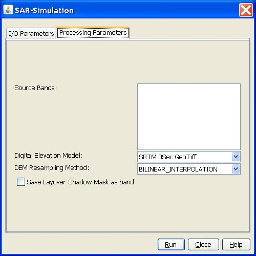

SAR Simulation Operator
The operator generates simulated SAR image using DEM, the Geocoding and orbit state vectors
from a given SAR image, and mathematical modeling of SAR imaging geometry. The simulated SAR
image will have the same dimension and resolution as the original SAR image.
Major Processing Steps
Some major steps of the simulation procedure are listed below:
- First a DEM image is created from the original SAR image. The DEM image
has the same dimension as the original SAR image. The pixel value of the DEM image is the
elevation of the corresponding pixel in the original SAR image.
- Then, for each cell in the
DEM image, its pixel position (row/column indices) in the simulated SAR image is computed
based on the SAR model.
- Finally, the backscattered power σ0 for the pixel is computed using backscattering model.
DEM Supported
Right now only the DEMs with geographic coordinates (Pא, Pא, Ph) in WGS84 with heights in meters are properly supported.
Since
the height information in ACE, ASTER, Copernicus and SRTM is referred to a geoid (EGM96, or EGM2008 for Copernicus), not WGS84
ellipsoid, correction has been applied to obtain height
relative to the WGS84 ellipsoid. SNAP currently converts Copernicus heights (and external DEMs with Apply EGM) using EGM96; the difference from EGM2008 is mostly below 1 m but can reach a few metres in mountainous areas.
User can also use external DEM file which, as specified above, must be in geographic lat/lon (WGS84) (Pא , Pא, Ph) DEM in meters. If its heights are geoid (orthometric) heights, keep External DEM Apply EGM on; if they are already ellipsoid heights, turn it off.
The External DEM Apply EGM option converts the heights of an external DEM from geoid heights (as in SRTM or Copernicus DEM files) to the ellipsoid heights that SAR geometry needs. Clear it only if your file already contains ellipsoid heights. Default in this operator: selected.
Layover-Shadow Mask Generation
Besides producing simulated image, this operator
can also generate layover-shadow mask for the simulated image using the
2-pass algorithm given in section 7.4 in [2]. For details of
layover-shadow mask generation, reader is referred to SAR Simulation
Terrain Correction operator.
Parameters Used
The following parameters are used by the operator:
- Source Band: All bands (real or virtual) of the source product. User can select one
or more bands for producing simulated image. If no bands are selected, then by default all
bands are selected. The selected band will be output as a band in the target product
together with the simulated image.
- Digital Elevation Model: DEM types. Choose from the automatically
tiled DEMs or specify using a single external DEM file by selecting
"External DEM".
- DEM Resampling Method: Interpolation method for obtaining
elevation values from the
original DEM file. The following interpolation methods are available:
nearest neighbour, bilinear, cubic convolution, binsinc and bicubic
interpolations.
- External DEM: User specified external DEM file. Currently only WGS84-latlong
DEM in meters is accepted as geographic system.
- Save Layover-Shadow Mask as band: Checkbox indicating that layover-shadow mask is saved as a band in the target
product.

Detailed Simulation Algorithm
Detailed procedure is as the follows:
- Get data for the following parameters from the metadata of the SAR image product:
- radar wave length
- range spacing
- first_line_time
- line_time_interval
- slant range to 1st pixel
- orbit state vectors
- slant range to ground range conversion coefficients
- Compute satellite position and velocity for each azimuth time by interpolating the
orbit state vectors;
- Repeat the following steps for each cell in the DEM image:
- Get latitude, longitude and elevation for the cell;
- Convert (latitude, longitude, elevation) to Cartesian coordinate P(X, Y, Z);
- Compute zero Doppler time t for point P(x, y, z) using Doppler frequency function;
- Compute SAR sensor position S(X, Y, Z) at time t;
- Compute slant range r = |S - P|;
- Compute bias-corrected zero Doppler time tc = t + r/c, where c is the light speed;
- Update satellite position S(tc) and slant range r(tc) = |S(tc) – P| for the bias-corrected zero
Doppler time tc;
- Compute azimuth index Ia in the source image using zero Doppler time tc;
- Compute range index Ir in the source image using slant range r(tc);
- Compute local incidence angle;
- Compute backscattered power and save it as value for pixel ((int)Ia, (int)Ir);
References
- Liu, H., Zhao, Z., Jezek, K. C. (2004). Correction of positional errors and geometric distortions in topographic maps and DEMs using a rigorous SAR simulation technique. Photogrammetric Engineering & Remote Sensing, 70(9), 1031–1042. doi:10.14358/PERS.70.9.1031
- Schreier, G. (Ed.) (1993). SAR Geocoding: Data and Systems. Herbert Wichmann Verlag, Karlsruhe.
Processing parameters (reference)
GPT operator: SAR-Simulation. Generated from the operator source; parameter names are those used in GPT and graph XML.
| Parameter | Type | Default | Allowed values | Unit | Description |
|---|
sourceBands | String[] | | | | The list of source bands. |
demName | String | Copernicus 30m Global DEM | | | The digital elevation model. |
demResamplingMethod | String | BICUBIC_INTERPOLATION | | | DEM Resampling Method |
externalDEMFile | File | | | | External DEM |
externalDEMNoDataValue | double | 0 | | | DEM No Data Value |
externalDEMApplyEGM | Boolean | true | | | External DEM Apply EGM |
saveLayoverShadowMask | boolean | false | | | Save Layover-Shadow Mask |
Background
Prerequisites
- A SAR product that is not map projected and, for TOPS, already debursted
- An installed DEM or an external DEM file
Next step